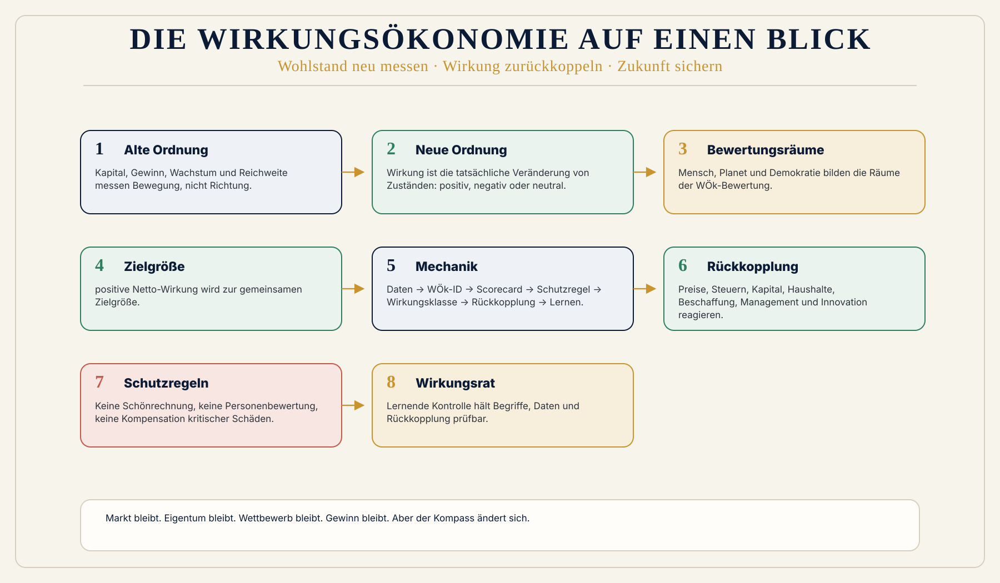
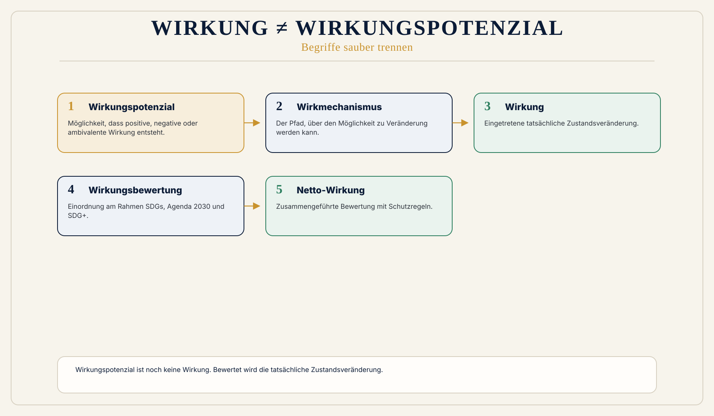
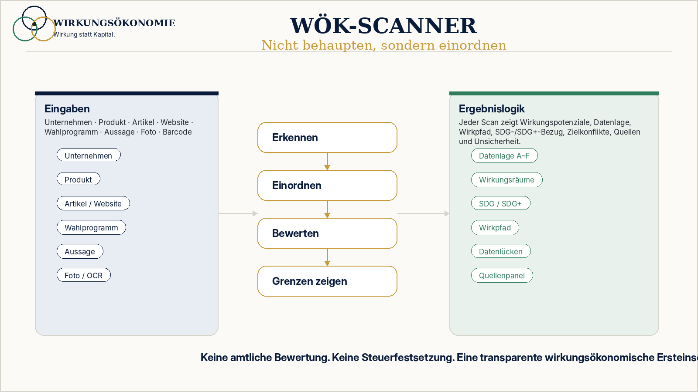

Alltag
Ein Preis zeigt, was bezahlt wird. Er zeigt nicht automatisch, welche Folgen bei Arbeit, Gesundheit, Klima oder Demokratie entstehen.
 Wirkungsökonomie
Wirkungsökonomie
Einfach erklärt
Wirkungsökonomie wird verständlich, wenn man zuerst fragt, was sich im Alltag verändert. Danach kommen die Begriffe, Daten und Bewertungsregeln.
Ein Preis zeigt, was bezahlt wird. Er zeigt nicht automatisch, welche Folgen bei Arbeit, Gesundheit, Klima oder Demokratie entstehen.
Wirkung ist die tatsächliche Veränderung von Zuständen. Sie kann positiv, negativ oder neutral sein.
Ziel der WÖk ist positive Netto-Wirkung für Mensch, Planet und Demokratie. Schwere Schäden dürfen nicht schöngerechnet werden.
WÖk-Kompass
Verstehe Wirkung.
Für Mensch, Planet und Demokratie.
Der WÖk-Kompass führt dich durch die zentrale Logik der Wirkungsökonomie:
Was wirkt? Worauf wirkt es? Wie wird Wirkung bewertet?
Und wie verändert Rückkopplung Preise, Kapital, Politik, Unternehmen und Alltag?
Audio verfügbar.
Direkt nutzbar
Der Kompass soll nicht wie eine Linkliste wirken. Diese Karten zeigen die Antwortstruktur: Kurzantwort, Satz, Wirkungspfad, Begriffe, Quellenbasis und Vertiefung.
Startfrage
In einem Satz
Wirkung beschreibt, was sich tatsächlich verändert.
Wirkung ist die tatsächliche Veränderung von Zuständen. Sie ist nicht automatisch gut. Sie kann positiv, negativ oder neutral sein und wird in der WÖk am Referenzrahmen SDGs, Agenda 2030 und SDG+ bewertet.
Wirkungspfad
Zentrale Begriffe
Begriffsleitfaden, Buchstand 2026, Glossar und Modellseite.
Startfrage
In einem Satz
Positive Netto-Wirkung ist die Zielgröße nach Zielkonflikten und Schutzregeln.
Positive Netto-Wirkung entsteht nicht durch einzelne gute Werte. Sie fragt, ob eine Entscheidung Mensch, Planet und Demokratie insgesamt stärkt und ob kritische Schäden nicht durch andere Vorteile verdeckt werden.
Wirkungspfad
Zentrale Begriffe
Begriffsleitfaden, Systemmodell, Modellseite und Schutzregel-Visual.
Startfrage
In einem Satz
Markt bleibt, aber der Kompass ändert sich.
Die WÖk schafft Markt, Eigentum, Wettbewerb, Innovation und Gewinn nicht ab. Sie verändert die Signale, nach denen Entscheidungen getroffen werden: Schädliche Wirkung darf nicht billig bleiben, positive Netto-Wirkung muss sich lohnen.
Wirkungspfad
Zentrale Begriffe
Buchstand 2026, Ordnungsteil, Begriffsleitfaden und Website-Seite Ordnung.
Themen
Diese Themen bilden die häufigsten Einstiege in den Kompass. Sie führen zu kuratierten Fragen, Antwortkarten, Begriffen und Quellen.
Wirkung ist tatsächliche Zustandsveränderung, nicht Absicht, Image oder Output.
Möglichkeit und eingetretene Veränderung sauber trennen.
Zielgröße mit Schutzregel und Nicht-Kompensation kritischer Schäden.
Agenda 2030 plus demokratische Wirkungsräume.
Reporting beschreibt. Rückkopplung verändert Entscheidungen.
Daten, WÖk-ID, Scorecard, Schutzregel, Wirkungsklasse, Rückkopplung.
Führung, Kultur, Lieferketten, Produkte, Kapital und Innovation wirken.
Vom Reparaturstaat zur frühen Wirkungsprüfung und Rückkopplung.
Bessere Signale statt moralischer Überforderung.
Frames, Resonanzräume und Wirkungspotenziale öffentlicher Sprache.
Modelllogik für Teilhabe, Automatisierung und Wirkungsbiografie.
ESG, Gemeinwohlökonomie, Donut und Wellbeing sind Anschlussräume, nicht die WÖk selbst.
Startfragen
Modellvertiefung
Diese Grafiken zeigen die Modelllogik erst nach den Antwortkarten. Sie sind Vertiefung, nicht Einstieg.


Wirkungsnavigation
Startfragen
Kuratiert und geprüft.
Denkraum
Der Kompass zeigt danach Kurzantwort, Formel, Wirkungspfad, Mensch-Planet-Demokratie-Bezug, SDG-/SDG+-Bezug, zentrale Begriffe und Quellen.
Zielgruppenmodus
Unternehmen, Politik, Bürger:innen, Mieter:innen, Rente / Einkommen, Journalismus, Investor:innen, Kommunen und Akademie haben eigene Einstiege im Zielgruppen-Hub.
Analysemodus
Geplante Eingaben: Unternehmen, Produkt, Artikel, Website, Wahlprogramm, politische Aussage, Gesetz, Investition oder Alltagsentscheidung.
Ausgabe: Wirkungspotenziale, SDG-/SDG+-Bezug, Wirkungsfelder, Wirkungspfad, Zielkonflikte, Datenbedarf, Quellen und Grenzen der Analyse. Keine amtliche Bewertung.
